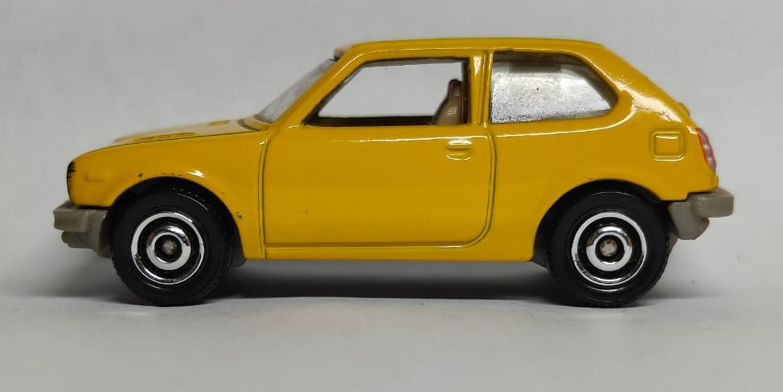

CVCC
The Honda CVCC (Compound Vortex Controlled Combustion) was a groundbreaking engine technology that made cars more fuel-efficient while meeting emissions standards.
Specifications
- Make: Honda
- Model: CVCC
- Year: 1975
- Engine: 1.5L I4 CVCC
- Horsepower: 53 hp
- Top Speed: 90 mph